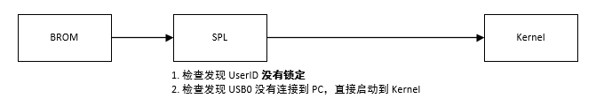
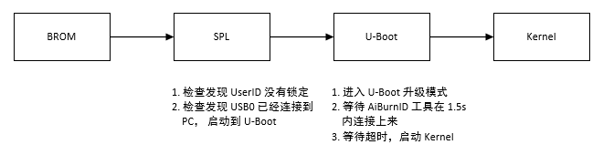
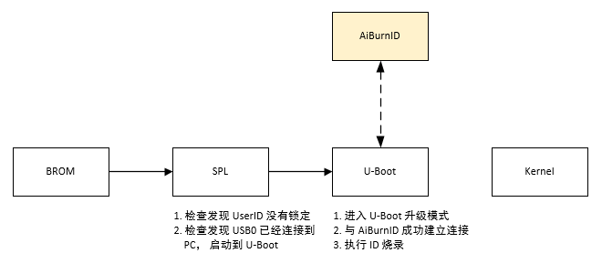
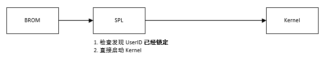

模块介绍
4 Dec 2024
Read time: 1 minute(s)
功能简介
UserID 是指厂商在量产过程中烧录的自定义 ID 数据，比如：
-
SN 序列号
-
MAC 地址
-
其他通过指定名字索引的数据
这些信息可以在工厂生产过程中使用 AiBurnID 工具进行烧录，并且在存储在 “userid” 分区。
UserID 分区支持在烧录完成之后进行锁定功能，一旦锁定，启动过程中不再进入 UserID 烧录模式。
注解
-
ID 名字可以自定义，但是不能重复
-
ID 的数据长度没有做特殊限制，但是分区大小为 256KB
UserID 软件模块分为两部分：
-
U-Boot 中的 UserID 烧录
-
Linux 用户空间读写库
其中 U-Boot 的 UserID 程序主要用于实现烧录，以及 “userid” 分区读写。Linux 用户空间的 UserID 库用于用户程序读取相关的 ID 信息。
默认情况下，UserID 烧录功能在 U-Boot 中不使能，使能 UserID 功能会导致开发阶段启动速度变慢。
启动流程
使能 UserID 功能之后，启动流程在不同场景下会有不同，容易让开发人员感到迷惑。 此处简要介绍在使能了 UserID 功能之后，在不同条件下的启动流程。
场景 1: 开发过程，独立供电
| 条件 | 状态 |
|---|---|
| UserID 分区是否锁定 | 否 |
| USB0 是否连接到 PC | 否 |
| AiBurnID 工具是否在等待状态 | - |

场景 2: 开发过程，USB 连接电脑供电
| 条件 | 状态 |
|---|---|
| UserID 分区是否锁定 | 否 |
| USB0 是否连接到 PC | 是 |
| AiBurnID 工具是否在等待状态 | 否 |

场景 3: 量产过程，烧录 UserID
| 条件 | 状态 |
|---|---|
| UserID 分区是否锁定 | 否 |
| USB0 是否连接到 PC | 是 |
| AiBurnID 工具是否在等待状态 | 是 |

场景 4: 量产完成，UserID 锁定
| 条件 | 状态 |
|---|---|
| UserID 分区是否锁定 | 是 |
| USB0 是否连接到 PC | - |
| AiBurnID 工具是否在等待状态 | - |
